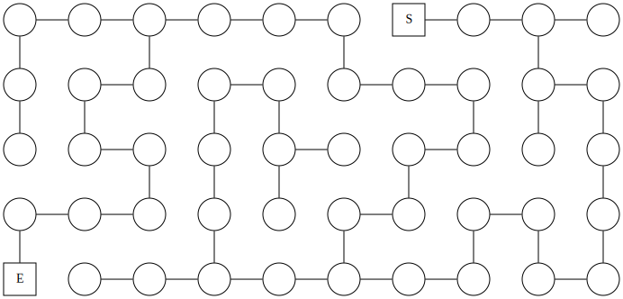
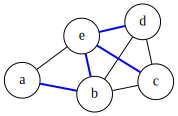
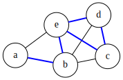
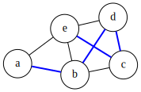
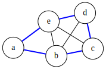
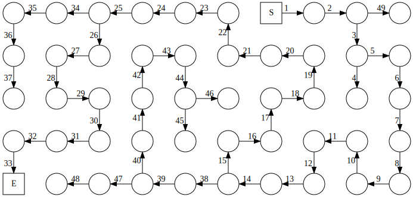

2 The Lurker’s Labyrinth
Ariadne Wanderlust has been tasked by Major von Veertex with mapping out the legendary underground labyrinth of Graphtopia, where a fearsome beast called the Lurker lives. Many brave adventurers had entered the maze, hoping to slay the monster or find the treasure hidden within, but none had ever returned.
Ariadne was not afraid, for she was well-versed in the arcane knowledge of graph traversal algorithms! Before being appointed Chief Explorer, she had been teaching graph search in the Graphtopia University, and was considered a world expert on depth-first exploration.
She knew what she had to do: walk deep into the maze for as long as possible, until she hit a wall, and then backtrack her steps to find an alternative route, carefully marking the walls of the already explored paths to avoid getting stuck in a loop –all adventurers travel with a bag full of chalk, you know?. She hoped to find the Lurker’s lair and then exit, before her bag of chalks ran out.
However, she soon realized that the labyrinth was more complex and dangerous than she had imagined. It was full of traps, dead ends, and loops. She also heard the Lurker’s roars getting closer, as it followed her scent. She wondered if she had made a mistake by choosing this exploration technique, but it was too late to switch. Now all she could do was hope to find the exit before the Minotaur could found her.
Modelling the labyrinth
The first step in solving any problem with graphs is, well, turning that problem into a graph problem!
In this case, what we must do is find a way out of the labyrinth, so we must decide how to model the labyrinth as a graph such that nodes and edges map to concepts in the labyrinth that are useful for this task. The most natural mapping, and the one you’re probably thinking about, is using edges to model the corridors in the labyrinth, and nodes to model the intersections.
A possible graph that models a labyrinth is show in Figure 2.1.
In this model, the solution to our problem –finding a way out of the labyrinth– translates into finding a sequence of nodes, each adjacent to next, that take us from the start S to the end E.
Let’s begin by formalizing this notion of “walking” through the graph, and meet the most important algorithms that will free Ariadne from the Minotaur.
Walking through a graph
The most important structure in a graph is a sequence of connected vertices. This is called a walk in the general case, where the only restriction is that between any pair of consecutive vertices there is an edge. Let’s look at our usual example graph one more time to see what are we talking about.




For example, the sequence \(a, b, e, d, e, c\) is a valid walk in our example graph, one that happens to touch all vertices. (But a walk doesn’t have to touch all vertices.) Notice that we can move over the same edge back and forth as we want, so we can extend any walk infinitely.
If we never repeat an edge (via backtracking or making a loop), then we have a trail. The previous walk is not trail because we backtrack through \((d,e)\). But \(a, b, e, d, c, e\) is a valid trail in our example graph, because although \(e\) appears twice, we get to it via different edges each time.
If we also never repeat a vertex, then we have a path. (Some literature will use path to refer to what we call a trail, and simple path to refer to a path with no repeated vertices). In our example graph, \(a, b, d, c, e\) is a path that happens to involve all vertices.
If the path loops over from the final vertex back into the first one, like \(a, b, d, c, e, a\), then we call it a cycle.
All trails contain a path \(\small(\Sigma)\)
You might have noticed that the difference between trails and paths is that trails can have small sub-cycles inside them. Intuitively, every time we find one such cycle, we can skip it and continue directly in the “main path”. Thus, it makes sense to think that we can always remove all detours from a trail and extract a path that begins and ends in the same vertices.
If we can get from \(a\) to \(b\) at all, then we must be able to get from \(a\) to \(b\) without making any unnecessary loops, right? The answer is yes, of course. This is our first theorem, and one we will use often in the rest of the book.
Theorem 2.1 In any graph \(G\), if there is a trail from \(a\) to \(b\), then there is a path from \(a\) to \(b\).
Proof. Here is one intuitive, but rigorous demonstration for Theorem 2.1. We will use something called the well-ordering principle1, a fundamental axiom of natural numbers, saying that every non-empty subset of the natural numbers have a least element.
In this case, we will consider the set of all possible trails between \(a\) and \(b\). Since, by the condition of the theorem, there exists a trail from \(a\) to \(b\), we know this is a non-empty set. Then we can invoke the well-ordering principle and ask for the smallest possible such trail2; let’s denote it by \(P\).
We claim that the shortest trail between \(a\) and \(b\) must be a path. Why? Here we will use another fundamental tool of logical reasoning: proof by contradiction3.
Suppose that \(P\) is not a path. Then, it must contain some internal loop, for otherwise it would be a path and the proof would be done. Thus, if it contains a loop, we can make the trail shorter by removing that loop, and it will still fo from \(a\) to \(b\). This is in contradiction with the claim that we had the shortest possible trail. Thus, by reductio ad absurdum, the shortest trail must be a path.
The proof is almost complete. The only step we slightly overlooked is the claim that the existence of a loop implies that we can make the trail shorter. To airtight this part of the proof, we need to show how to construct a shorter trail by cutting a loop.
Let \(P = a \rightarrow^n b\) be the shortest trail between \(a\) and \(b\), with length (i.e. number of edges) \(n = |P| - 1\). Assume that \(P\) has a loop; in other words, there is a vertex \(x\), that appears twice inside the trail. (\(x\) could be \(a\) or \(b\) as well.)
Thus, \(P\) looks like
\[ P = a \rightarrow^{k_{1}} x^{(1)} \rightarrow^{k_{2}} x^{(2)} \rightarrow^{k_{3}} b, \]
where \(x^{(i)}\) indicates the $i $-th time the vertex \(x\) appears. Note that \(k_{1} + k_{2} + k_{3} = n\), where \(k_{1} \geq 0\), \(k_{2} > 0\), and \(k_{3} \geq 0\). That is, the part between \(x^{(1)}\) and \(x^{(2)}\) must have at least one edge. (In fact, it must have at least two, but we don’t need that.)
Now we need to construct a valid trail from \(a\) to \(b\) that is strictly smaller than \(n\). In trail \(P\) we have two trails \(a \rightarrow^{k_1} x\) and \(x \rightarrow^{k_2} b\) that we can stitch together and make a new trail \(P’ = a \rightarrow^{k_1+k_3} b\), where the length of \(P’\) (equal to \(k_1+k_3\)) must be strictly less than \(n\) because \(k_2 > 0\). \(\blacksquare\)
Graph traversal
The simplest procedure in graphs that involves some notion of “walking” is graph traversal. This is the task of enumerating all nodes in a predefined order by moving through the edges. That is, we don’t want to simply list all nodes, but to order them in a way that uses the graph structure such that subsequent nodes are connected.
There are two basic graph traversal algorithms: depth-first search (DFS) and breadth-first search (BFS). Both algorithms are very similar, and will produce a full enumeration of a graph – assuming that all nodes are reachable, a topic we’ll discuss in next chapter. DFS and BFS differ in how they prioritize being eager versus being comprehensive.
Abstract traversals \(\small[\lambda]\)
We will begin by defining how our abstract notion of “search” looks like. To keep things simple, we assume that a search algorithm provides a single method traverse that simply enumerates all edges in the order in which they are discovered.
Note
The nodes method is just a thing wrapper around traverse that yields the nodes instead the full edges.
Why make this a class? Isn’t this just a method? Well, it’s a bit of mouthful at the moment, for sure. But later, as we explore many search algorithms, we’ll want to compare different strategies. That’s when the search interface will shine.
Plus, this abstract method allows us to implement a very common search pattern that we’ll’ reuse over and over: searching for an specific set of nodes. (Including a single node.) We can have the general-purpose case that matches any node with a given property, and the special case when we need to find one particular node – e.g., like the exit of the labyrinth.
With this code in place, we’re ready for some actual search algorithms.
Depth-first search
As the name implies, depth-first search is a graph traversal algorithm that prioritizes going as deep as possible as fast as possible. In our labyrinth analogy, this means turning right until a dead end and backtracking to the last unexplored intersection.
More precisely, DFS starts at an arbitrary root node in the graph, then jumps to one of its neighbors, continuing the traversal from there. You can select which neighbor to visit by a random choice, but most commonly one simply defines an order – e.g., the order in which neighbors are listed in the adjacency list.
In a practical scenario, this could mean always trying to move south, then east, then north, then west. Of course, you must keep track of which nodes (or intersections in this case) you have already visited. Otherwise you can easily get stuck in a loop.
This is how DFS looks like in our sample graph that models the labyrinth problem.

Understanding this image
In the previous image, we label each edge by a number that indicates the order in which it is discovered by DFS. Thus, edges that have consecutive numbers indicate that DFS traveled along that path. When you see two contiguous edges with non-consecutive numbers, that means DFS backtracked to the corresponding node after getting stuck to explore a different path.
Programming DFS \(\small[\lambda]\)
Let’s implement DFS! The easiest way is via recursion4: we start at the root node and recursively visit all non-visited neighbors. To make sure we don’t get stuck in a loop, we keep track of the explored nodes throughout all the recursive calls.
Each iteration returns the edge \((x, y)\), where \(y\) is the current node under consideration, and \(x\) is the “parent” node – that we must also keep track of during recursion.
Here is the full implementation:
As it’s common in recursive methods, we have a public “portal” method traverse that exposes the public arguments, which in turn defers to a private implementation _dfs that takes any additional arguments we need for bookkeeping.
Recursive iterators
You may be stumped by the use of the yield from syntax at the end of the DFS implementation. This is the Python solution to the problem of building recursive generators that are flattened automatically. It is semantically equivalent to something like:
for e in self._dfs(graph, node, current, visited):
yield eBut yield from does a bit more work to solve some nasty edge cases. To understand why we need this, notice that just using yield at this point would return the whole sub-generator as an element of the parent generator, which is not what you want. Instead, you must unpack the sub-generator and yield each element individually, which is what yield from does under the hood.
Finding your way out
Armed with the arcane knowledge of depth-first search, it is now trivial to exit the labyrinth (provided there is indeed a way out). We just need to run DFS in the start node and, eventually, we will reach the end node. We might have to backtrack once or twice if we are unlucky to pick to wrong turn, but as long as we keep track of every node we visit, and make sure not repeat any of them, the way out is guaranteed to be found.
Computing paths \(\small[\lambda]\)
While knowing that a goal node exists is useful, we often want to find the actual path that takes us there. Fortunately, our abstract Search strategy can implement this operation easily using the parent from the tuple (parent, node) available in each iteration in the traverse method.
To quickly compute paths, we can define a simple structure (Paths) that stores a reference to the parent of each node found during search. With this information, the path between our origin vertex and an arbitrary destination is easy to compute by following the links backwards. That is, we start at the destination node, and iteratively add the parent node to a list, until we find the origin node. Then, we simply reverse the list.
Paths are origin-dependent
You’ll notice we don’t require an origin parameter in the Paths.path method. That is because this structure holds paths precomputed from a fixed origin node, that is, the node from which the search algorithm started.
If you need to precompute paths for arbitrary pairs of nodes, there is little you can do other than using a Path instance for each origin node.
With this structure in place, we can add a method to the Search class to compute all paths for a given graph and origin.
Analyzing DFS
Before finishing, let’s turn our attention now to the analysis of this algorithm. In computer science, we are often interested in answering a few critical questions for every algorithm:
- Does the algorithm always work?
- How fast does it work?
- How much memory does it need?
- Is there any better algorithm?
The first question asks about the correctness of the algorithm. An algorithm is only useful if it always works – or if, at least, we can determine beforehand whether it will work or not. In the case of DFS, we can claim with absolute certainty that, if there is a path from origin to destination, the algorithm will eventually find it.
¿Why? We can give an intuitive justification of correctness for DFS as follows. Since we never repeat any vertex, and we explore all neighbors of the vertices we visit, we must visit every vertex, that is reachable from the origin, eventually.
Now, there is one massive caveat with DFS. You have no guarantee the path you find is the shortest path from the origin to the destination. Because DFS walks down a path as long as possible, and then never revisits those nodes, you can actually discover the destination first by going throught the long way, instead of taking a shortcut.
The second and third questions ask about the performance of the algorithm. If we want to compare two algorithms for the same problem, there are almost always at least two obvious dimensions: running time and memory requirement. We usually want the fastest algorithm, provided we have enough memory to run it, right?
Now, for reasons beyond the scope of this book, it is almost always useless to think in terms of actual time (like seconds) and memory (like megabytes), since the exact values of those properties for any given algorithm will depend on many circumstancial details like the speed of your microprocessor or the programming language you used.
Instead, to compare two algorithms in the most abstract and fair possible way, we use a relative run-time and memory, that just considers the “size” of the problem. In most cases in this book, the “size” of our problem is something we can approximate by the total number of edges and vertices in our graph.
Thus, we can formulate questions 2 and 3 in terms of, given a graph of \(n\) vertices and \(m\) edges, how many steps of DFS do we need? You can probably suspect the answer by looking at Figure 2.3 and counting the numbers. You will notice the answer is just the number of edges, since DFS explores the whole graph, and never repeats any path. In general, most search algorithms in this book will take a time that is proportional to the total number of vertices and edges in the graph.
Regarding memory, we could assume we also need something proportional to the total size of the graph, since we need to mark every visited node, right? Well, that is true only if there are loops in the graph. But if you know beforehand there are no loops, then once you hit a dead end and backtrack, you can forget that whole branch up until the bifurcation. This means that, on average, you will only need enough memory to remember as many nodes as there are in the longest possible path in the graph.
Finally, we can ask if there is any way to discover the exit faster. The general answer is “no”, unless we know something special about the graph. That is, in a general graph, without any extra knowledge, you have absolutely no idea where the exit (or the destination nodes in general) will be, so at worst you’ll have to explore the whole graph.
However, as we will see a few chapters down the road, in many ocassions you do know something extra about the graph – e.g., when driving around a city, you have some sense of which direction your destination is. In these cases, we can often speed-up the search massively with some clever strategies.
Final remarks
Depth-First Search is a cornerstone of graph search. Almost all algorithms in this book will either include it as an explicit step, or use it as a building block.
Besides being extremely simple and elegant to implement, DFS is also the easiest to adapt to a real-life situation. Unlike most other graph search algorithms, DFS only moves to adjacent nodes. So, if you are an agent exploring a graph-like structure in real-life – just like Ariadne – DFS is what you would most likely use.
The main caveat of DFS, as we already saw, is that you cannot guarantee that the first time you discover a node, you did so via the shortest path to the origin. In fact, it is easy to come up with examples where you actually reach your destination through the longest possible path –it all depends on how lucky you are selecting which neighboor to visit next.
Next chapter, we will look at an alternative way to explore a graph that guarantees shortests paths, but it requires that you can teleport to any given node.
See https://en.wikipedia.org/wiki/Well-ordering_principle.
Technically, we don’t need the full well-ordering principle in this proof because we have a finite set of things, so of course one of them must be the smallest. The well-ordering principle applies also to infinite sets, which is where it becomes really handy.↩︎
Mathematically speaking, we used the well-ordering principle on the lengths of the trails, but that’s in a one-to-many relation with the set of trails. Thus, we can select a trail that has the shortest length.↩︎
https://thepalindrome.org/p/proof-by-induction-and-contradiction↩︎
As the saying goes, to understand recursion, you first need to understand recursion.↩︎